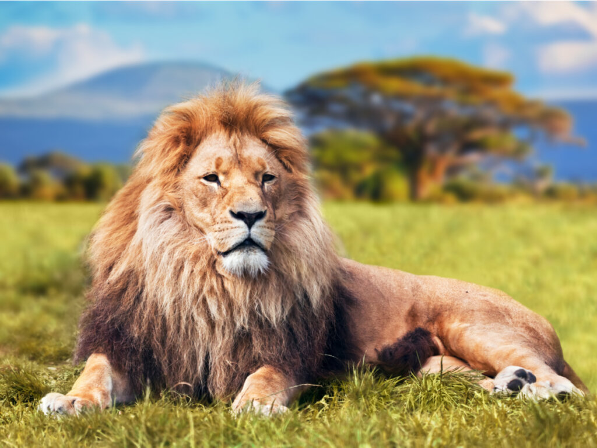

Inicio
Te contamos todo sobre el león, dónde vive y cómo se reproduce. Además, cómo se alimenta y sus características.
El león (Panthera Leo)
El león (de nombre científico Panthera leo) es un felino carnívoro de gran tamaño. Es originario del África Subsahariana y de ciertas regiones de la India, en donde constituye el mayor depredador de la cadena trófica. Es uno de los animales salvajes más conocidos y temidos por la humanidad, por su fiereza, pero también admirados y representados en símbolos, relatos y esculturas.
Los antepasados de los leones aparecieron hace 4,1 a 5,9 millones de años, y de ellos derivan todas las cuatro especies del género Panthera: el tigre, el jaguar, el león y el leopardo. Estas últimas dos se separaron evolutivamente hace 1,25 millones de años, y surgieron como los conocemos hoy en África hace entre 1 millón y 800.000 años.
Durante el Pleistoceno superior se extendieron a lo largo y ancho de los cinco continentes, dando origen así al extinto león americano y al puma, hasta que en la última glaciación, hace 10.000 años, se extinguieron en Europa, América y casi toda Asia.
La humanidad ha tenido contacto con leones desde tiempos ancestrales, y ha visto en ellos un símbolo de nobleza, ferocidad y masculinidad. Por eso, es común encontrarlos en relatos antiguos, en banderas de países, en escudos familiares e incluso como símbolo de uno de los cuatro evangelios bíblicos.
A pesar de ello y de ser potentes depredadores, los leones se hallan entre las especies vulnerables y susceptibles de extinción. En las últimas décadas sus poblaciones sufrieron un declive de entre un 30 y 50%, haciendo que su vida no sea viable por fuera de las reservas ecológicas delimitadas.
La pérdida de su hábitat y los conflictos con las poblaciones humanas son en parte causantes de este fenómeno, por lo que numerosos zoólogos del mundo colaboran para intentar aumentar los números de la especie en cautiverio.
Características
Dónde viven
Qué comen
Audio
Se trata de criaturas eminentemente carnívoras, grandes cazadores de las llanuras africanas. La cacería se da mediante ataques coordinados y en manada, procurando aislar y sitiar a la presa lo más rápido posible, pues no tienen una resistencia física particularmente alta. De hecho, pueden alcanzar velocidades de hasta 60 kmph, pero sólo en distancias breves.
Sus presas predilectas suelen ser mamíferos grandes, como ñus, búfalos, impalas, cebras, jabalíes, ciervos o jirafas jóvenes, e incluso focas, si logran dar con alguna en la costa de Namibia. Si habitan cerca de rebaños de ganado, es probable que también se lleven alguna res de vez en cuando.
Cómo se reproducen
Los leones se reproducen de manera sexual, como todos los mamíferos, y son animales vivíparos. En cada embarazo una hembra puede dar a luz entre una y cuatro crías en una madriguera aislada del resto de la manada. Las hembras tienen varias épocas de celo al año, durante las cuales pueden aparearse con varios leones, teniendo luego una gestación de 110 días en promedio.
Cuando las crías tienen ya edad suficiente, las hembras se reintegran a la manada. Allí los cachorros juegan y aprenden a cazar y a ocupar su lugar en la jerarquía social. Una vez alcanzada la adultez, muchas de las antiguas crías son expulsadas por la manada para que busquen un territorio propio.
Cúanto viven
Información personal
Ada Stephy Cabezas Escobar
Carnet: CE18014
Guia 21C